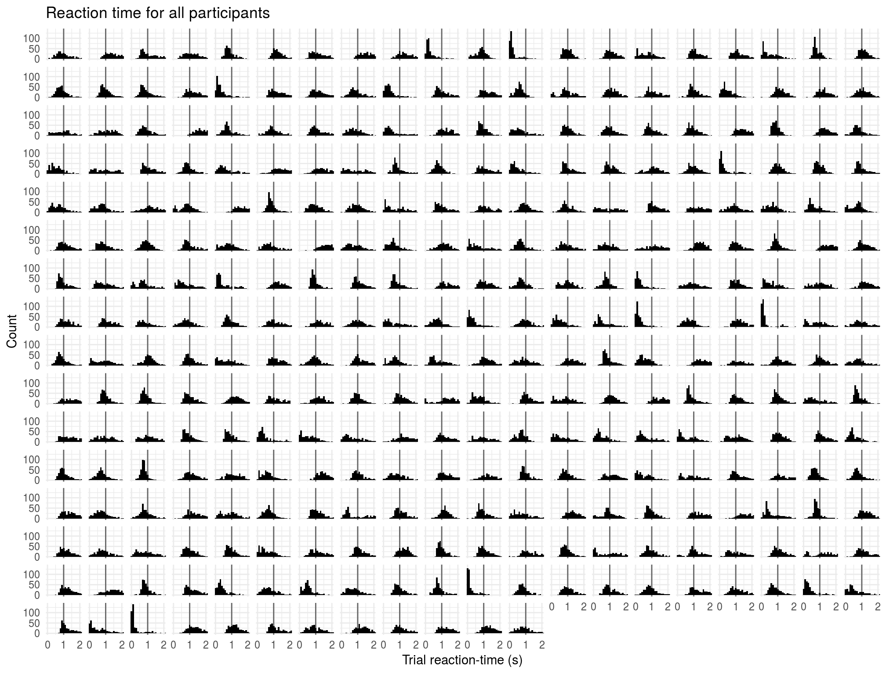
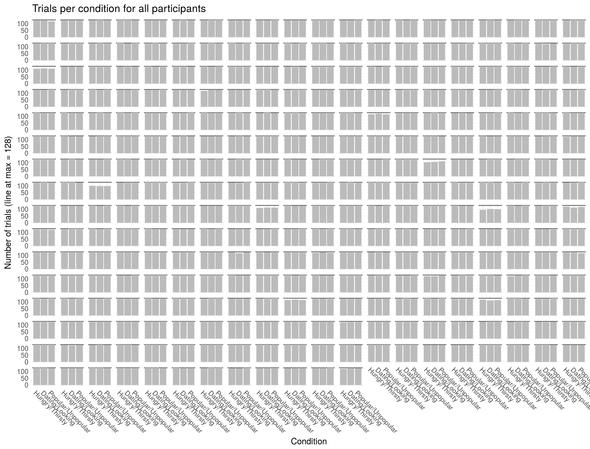
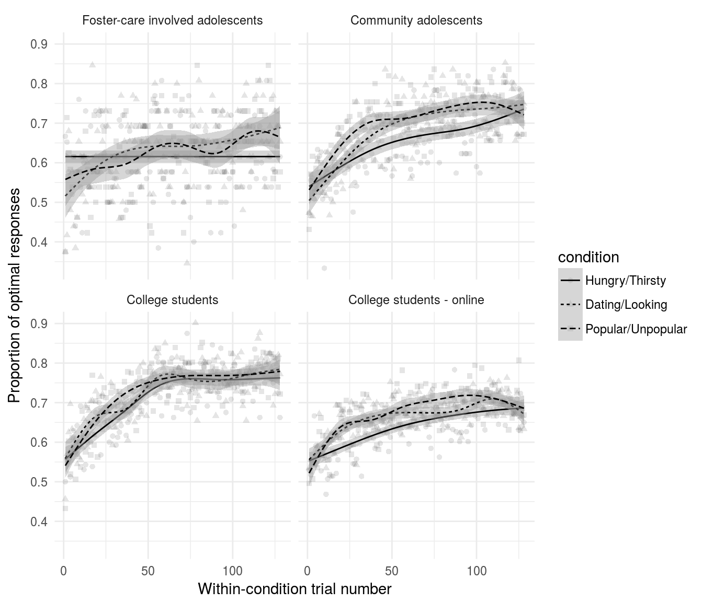
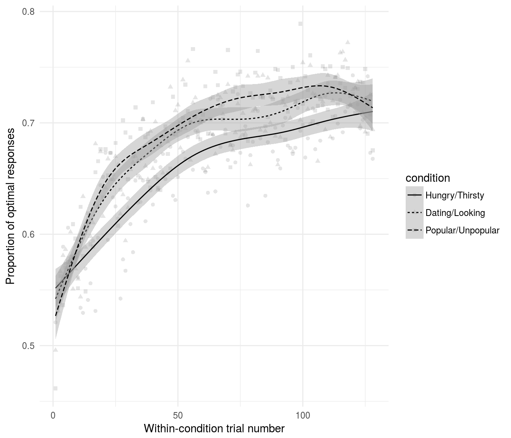
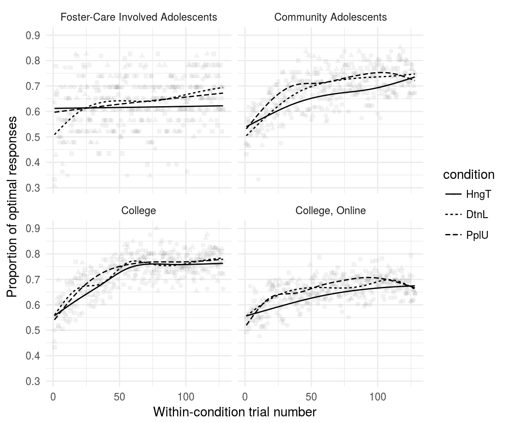

The table below shows the number of participants in each sample. TDS3 has very few participants, and as it was intended to bolster numbers for TDS1, will be collapsed.
library(probly)
library(dplyr)
library(tidyr)
library(ggplot2)
data('splt', 'splt_confidence')
sample_labels <- c(
'TDS1' = 'Foster-care involved adolescents',
'TDS2' = 'Community adolescents',
'yads' = 'College students',
'yads_online' = 'College students - online'
)
condition_labels <- c(
'HngT' = 'Hungry/Thirsty',
'DtnL' = 'Dating/Looking',
'PplU' = 'Popular/Unpopular'
)
splt$condition <- factor(splt$condition, levels = names(condition_labels), labels = condition_labels)
splt$sample <- factor(splt$sample, levels = names(sample_labels), labels = sample_labels)knitr::kable(
dplyr::select(
dplyr::mutate(
dplyr::summarize(
dplyr::group_by(
dplyr::distinct(splt, id, dir, filename, sample),
sample),
n = n())),
sample, n),
caption = 'Individuals in each sample',
col.names = c('Sample', 'N'))| Sample | N |
|---|---|
| Foster-care involved adolescents | 26 |
| Community adolescents | 61 |
| College students | 81 |
| College students - online | 144 |
splt_by_cond_samp <- dplyr::group_by(splt, condition, sample)
splt_summary_optimal_feedback <- dplyr::summarize(
splt_by_cond_samp,
p_optimal_correct = mean((proportion == '20_80') == (correct_r == 1))
)
knitr::kable(splt_summary_optimal_feedback,
col.names = c('Condition', 'Sample', 'P(Reward | Optimal)'),
caption = 'Probability that an optimal choice results in reward',
digits = 3)| Condition | Sample | P(Reward | Optimal) |
|---|---|---|
| Hungry/Thirsty | Foster-care involved adolescents | 0.791 |
| Hungry/Thirsty | Community adolescents | 0.790 |
| Hungry/Thirsty | College students | 0.789 |
| Hungry/Thirsty | College students - online | 0.794 |
| Dating/Looking | Foster-care involved adolescents | 0.792 |
| Dating/Looking | Community adolescents | 0.797 |
| Dating/Looking | College students | 0.791 |
| Dating/Looking | College students - online | 0.788 |
| Popular/Unpopular | Foster-care involved adolescents | 0.796 |
| Popular/Unpopular | Community adolescents | 0.792 |
| Popular/Unpopular | College students | 0.798 |
| Popular/Unpopular | College students - online | 0.800 |
ggplot2::ggplot(
dplyr::filter(splt, rt > 0),
ggplot2::aes(x = rt/1000)) +
ggplot2::geom_vline(xintercept = 1, size = .5, color = '#666666') +
ggplot2::geom_histogram(binwidth = .1, fill = 'black') +
ggplot2::theme_minimal() +
ggplot2::theme(strip.background = element_blank(),
strip.text = element_blank()) +
ggplot2::scale_x_continuous(breaks = c(0, 1, 2)) +
facet_wrap(~id, ncol = 20) +
coord_cartesian(x = c(0, 2)) +
labs(x = 'Trial reaction-time (s)',
y = 'Count',
title = 'Reaction time for all participants')
max_number_of_trials <- max(
dplyr::summarise(
dplyr::group_by(
dplyr::filter(splt, !is.na(pressed_r)),
id, condition),
n_trials = n())$n_trials
)
ggplot2::ggplot(
dplyr::filter(splt, !is.na(pressed_r)),
ggplot2::aes(x = condition)) +
ggplot2::geom_hline(yintercept = max_number_of_trials, color = '#666666') +
ggplot2::geom_bar(fill = '#bbbbbb') +
ggplot2::theme_minimal() +
ggplot2::theme(strip.background = element_blank(),
strip.text = element_blank(),
axis.text.x = element_text(angle = 360-45, hjust = 0)) +
facet_wrap(~id, ncol = 20) +
labs(x = 'Condition',
y = paste0('Number of trials (line at max = ', max_number_of_trials, ')'),
title = 'Trials per condition for all participants')
Averaging over trials
splt_averages <- splt %>%
dplyr::group_by(sample, condition, condition_trial_index) %>%
dplyr::summarize(p_optimal = mean(correcttrue, na.rm = T)) %>%
dplyr::ungroup()
splt_averages_over_samples <- splt %>%
dplyr::group_by(condition, condition_trial_index) %>%
dplyr::summarize(p_optimal = mean(correcttrue, na.rm = T)) %>%
dplyr::ungroup()
ggplot2::ggplot(
splt_averages,
ggplot2::aes(x = condition_trial_index,
y = p_optimal,
group = condition,
linetype = condition,
shape = condition)) +
ggplot2::geom_point(alpha = .1) +
ggplot2::geom_smooth(
color = 'black', size = .5,
method = 'gam', formula = y ~ s(x, bs = "cs", k = 8), se = T) +
ggplot2::facet_wrap(~sample, nrow = 2) +
ggplot2::labs(x = 'Within-condition trial number',
y = 'Proportion of optimal responses') +
ggplot2::theme_minimal()
ggplot2::ggplot(
splt_averages_over_samples,
ggplot2::aes(x = condition_trial_index,
y = p_optimal,
group = condition,
linetype = condition,
shape = condition)) +
ggplot2::geom_point(alpha = .1) +
ggplot2::geom_smooth(
color = 'black', size = .5,
method = 'gam', formula = y ~ s(x, bs = "cs", k = 8), se = T) +
ggplot2::labs(x = 'Within-condition trial number',
y = 'Proportion of optimal responses') +
ggplot2::theme_minimal()
Self-reported confidence over blocks
ggplot2::ggplot(
dplyr::filter(splt_confidence, !is.na(sample), sample != 'TDS3'),
ggplot2::aes(x = block, y = confidence)) +
ggplot2::geom_point(position = ggplot2::position_jitter(w = .3, h = .3), alpha = .1) +
ggplot2::geom_smooth(
ggplot2::aes(color = sample),
method = 'gam', formula = y ~ s(x, bs = "cs", k = 8), se = F) +
ggplot2::theme_minimal() +
ggplot2::labs(x = 'Block number',
y = 'Self-report confidence about optimal label')